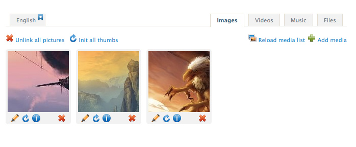
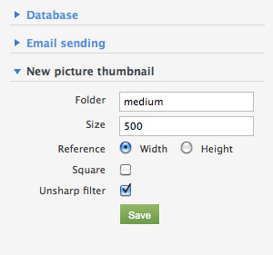

Media
Pictures, music, videos, files can be uploaded through the Ionize media manager or directly by FTP in your media folder.
Media can be used in 2 ways :
- Linked to articles or pages and displayed through ionize's tags,
- Added in articles content with the embeded editor.
Media are stored by default in the /files folder of your installation directory.
To change the default media folder, go in the panel : Settings > Advanced Settings > Media Management.
Changing the folder name changes renames also the filesystem folder and updates media URLs found in the database content.
Content linked media
Media can be linked to Pages and Articles.
Linked media instead of adding them to the content has several advantages :
- The media meta data (alternative text, title, etc.) are stored in database, for each media,
- Because the media list can be looped in a view, it is easy to build a gallery from media linked to an article,
- Automatic thumbnails generation can be set for linked media. Using these thumbnails can preserve the design.
Ordering media is simply done by drag'n drop.
Pictures thumbnails
When a picture is linked to a page or an article, the defined thumbnails are automatically created by Ionize if they don't exists.
These thumbnails are defined in Settings > Advanced settings.
In the above example, we define a 500px width thumb wich will be located in the folder thumb_medium.
In this example, when a thumb is created, it will use the sharp filter, which will give a more sharpen thumbnail and avoid the common blur problem on little thumbs.
Automatic picture resize on upload
When set, uploaded pictures are checked and if their size is bigger than the defined one, they will be resized during the upload process.
To activate automatic upload :
- Settings > Advanced settings
- In Media Management
- Set Picture max. Width and Picture max. Height values, in pixels.
| Setting | Description |
|---|---|
| Folder |
Thumbnail folder, in the picture folder. The folder will physically be named thumb_<your_thumb_folder>. Example : The thumbs in the folder called "small" are physically stored in the folder thumb_small. |
| Size | Thumbnail size, in pixels. |
| Reference | Will width or height of the picture be the reference for the thumb size |
| Square | The thumbnail will be cropped to a square one. |
| Unsharp filter | When selected, an unsharp mask will be processed on the thumb during generation. This will improve the thumbnail sharpness, but make the thumbnail creation process longer. This filter is not valuable on big thumbnails (more than 200 pixels). On big thumbnail, it also can takes a lot of process memory. |
Media meta data
Once one media is attached to a page or a article, it is encouraged to add some meta data to it.
Once written, these meta data will be linked to the media and if you attach the same media to another article or page, you will find the same data.
In other words, once set, you don't have to set again the media meta data of one medium.
Get Media in views
The <media /> tag allows to loop through a kind of media :<ion:medias type="picture/music/video/file" [ range="1,2" limit="3" ] > <img title="<ion:title />" alt="<ion:alt />" src="<ion:src />" /> </ion:medias>
Look at the Ionize media tag documentation to see complete features of this tag.